日本フィジカルAI新聞
https://physicalainews.jp
フィジカルAI(ロボット基盤モデル)・半導体・GPU・計算基盤の世界の動きを日本語で追う専門紙。ニュース・企業DB・Robot DB・論文・入札公募・イベント。
フィード
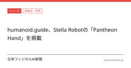
humanoid.guide、Stella Robotの「Pantheon Hand」を掲載
日本フィジカルAI新聞
humanoid.guideが「Pantheon Hand」を取り上げた。記事の掲載は、メーカーによる発表や製品供給の確認とは異なる。製品の位置づけを判断するには、メーカーの公式情報との照合が必要だ。
11分前
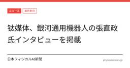
钛媒体、銀河通用機器人の張直政氏インタビューを掲載
日本フィジカルAI新聞
钛媒体は2026年5月19日、銀河通用機器人の張直政氏へのインタビューを掲載した。記事掲載は技術成果や実装状況を独立に検証するものではない。関連する公開情報では、具身知能向けのデータ基盤や計算基盤も別個に扱われている。
1時間前
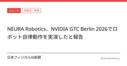
NEURA Robotics、NVIDIA GTC Berlin 2026でロボット自律動作を実演したと報告
日本フィジカルAI新聞
neura-robotics.comが、NVIDIA GTC Berlin 2026でのロボット自律動作の実演を報告した。記事は実演を扱うもので、導入実績や独立した性能評価を示すものではない。実演の詳細は原典を参照されたい。
3時間前
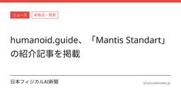
humanoid.guide、「Mantis Standart」の紹介記事を掲載
日本フィジカルAI新聞
humanoid.guideは、車輪型ヒューマノイド「Mantis Standart」を取り上げた記事を掲載した。
7時間前
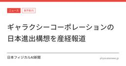
ギャラクシーコーポレーションの日本進出構想を産経報道
日本フィジカルAI新聞
産経新聞がギャラクシーコーポレーションの日本進出に関する動きを報じた。現時点で確認できるのは、報道があったという事実である。事業の実施時期や運営形態は、公開情報での確認が必要だ。
8時間前
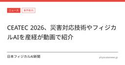
CEATEC 2026、災害対応技術やフィジカルAIを産経が動画で紹介
日本フィジカルAI新聞
産経新聞がCEATEC 2026の展示技術を動画で紹介した。記事は災害対応技術やフィジカルAIなどを取り上げている。記事抜粋だけでは、各技術の性能や導入状況は判断できない。
8時間前
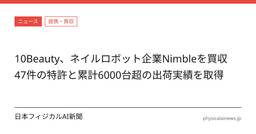
10Beauty、ネイルロボット企業Nimbleを買収 47件の特許と累計6000台超の出荷実績を取得
日本フィジカルAI新聞
10BeautyがNimbleを買収したと発表した。取得対象には47件の取得済み特許と累計6000台超の出荷実績、経営・開発幹部が含まれる。leaderobot.comは、米国のネイルロボット市場で初期参入企業の集約が進んだと報じた。
8時間前
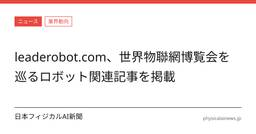
leaderobot.com、世界物聯網博覧会を巡るロボット関連記事を掲載
日本フィジカルAI新聞
leaderobot.comが2026年10月31日、2026世界物聯網博覧会とロボットを扱う記事を掲載した。本紙が確認できるのは記事の掲載であり、個別ロボットの性能や稼働実績を示す一次資料ではない。展示、規格を扱う記事、実稼働の証拠は分けて評価する必要がある。
8時間前
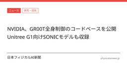
NVIDIA、GR00T全身制御のコードベースを公開 Unitree G1向けSONICモデルも収録
日本フィジカルAI新聞
NVIDIAのGR00T Whole-Body Controlリポジトリは、学習・評価・実機展開向けのコードやモデルを収録する。Unitree G1向けSONICは3種類で、制御周期は共通して50Hz。参照動作の先読み幅はモデルにより異なる。公開範囲には学習コード、展開基盤、モデル重みが含まれるが、重みにはNVIDIA Open Model Licenseが適用される。
9時間前
tech-insider.org、Tesla Optimusの生産ライン記事を掲載
日本フィジカルAI新聞
tech-insider.orgは2026年10月29日、Tesla Optimusの生産ラインに関する記事を掲載した。提供情報で確認できるのは記事の掲載と題名までだ。記事の内容をTeslaの公式発表や生産実績として扱うことはできない。
10時間前
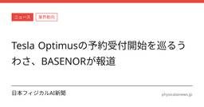
Tesla Optimusの予約受付開始を巡るうわさ、BASENORが報道
日本フィジカルAI新聞
BASENORがTesla Optimusの予約受付を巡るうわさを報じた。報道されたことと、Teslaが公式に発表したことは区別が必要だ。予約受付、生産、出荷、実際の稼働はそれぞれ異なる段階である。
10時間前
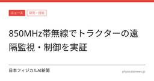
850MHz帯無線でトラクターの遠隔監視・制御を実証
日本フィジカルAI新聞
産経新聞は、850MHz帯Wi-Fi HaLowを使ったロボットトラクターの遠隔監視・制御実証が行われたと報じました。
11時間前
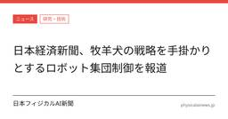
日本経済新聞、牧羊犬の戦略を手掛かりとするロボット集団制御を報道
日本フィジカルAI新聞
日本経済新聞がロボット集団を制御するアルゴリズムを扱う記事を掲載した。記事の見出しは牧羊犬の戦略を手掛かりとしている。具体的な技術内容や実証結果は、提供された情報から確認できない。
11時間前
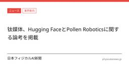
钛媒体、Hugging FaceとPollen Roboticsに関する論考を掲載
日本フィジカルAI新聞
钛媒体がHugging FaceとPollen Roboticsに関する論考を掲載した。提供資料は二次報道で、一次発表資料は含まれていない。論考の掲載と、そこで扱われた個別情報の検証は分けて読む必要がある。
13時間前
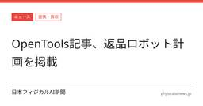
OpenTools記事、返品ロボット計画を掲載
日本フィジカルAI新聞
OpenToolsの記事見出しは、OttoとSereactが人による品質確認を伴う返品処理ロボットを計画していると伝えている。
13時間前
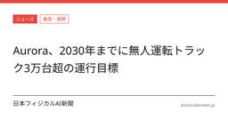
Aurora、2030年までに無人運転トラック3万台超の運行目標
日本フィジカルAI新聞
Auroraは2030年までに無人運転トラック3万台超の運行を目指す。2026年末の運行台数見込みは200台で、目標との差は規模拡大の大きさを示す。第2世代ハードウェアの量産準備と複数車種への対応も進めるとしている。
13時間前
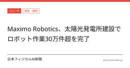
Maximo Robotics、太陽光発電所建設でロボット作業30万件超を完了
日本フィジカルAI新聞
Maximo Roboticsは、米国の大規模太陽光発電所建設でロボットシステムによる作業が30万件を超えたと発表した。Max 4.0と作業員が組んだ場合、1人・1シフト時間当たりの設置率は手作業の2.5倍だったとしている。料金は完了した作業単位で決まるRaaS方式で、作業データを次の展開に生かす構成だ。
13時間前
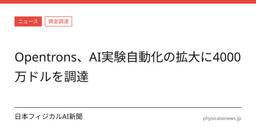
Opentrons、AI実験自動化の拡大に4000万ドルを調達
日本フィジカルAI新聞
Opentrons LabworksがシリーズEで4000万ドルを調達した。資金はロボット、ソフトウェア、データ基盤の拡大に充てる。同社は1万1000台超を80カ国超に展開している。
13時間前
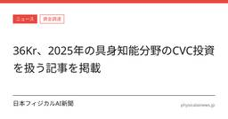
36Kr、2025年の具身知能分野のCVC投資を扱う記事を掲載
日本フィジカルAI新聞
36Krが2025年の具身知能分野のCVC投資を扱う記事を掲載した。提供されたソースは二次報道の抜粋で、投資内容の詳細は確認できない。後続の関連記事は、投資や協業を示す情報の性質を分けて読む必要性を示す。
15時間前
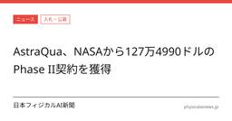
AstraQua、NASAから127万4990ドルのPhase II契約を獲得
日本フィジカルAI新聞
NASAはAstraQuaに、AstraSenseを進める127万4990ドルのPhase II契約を授与した。対象は電気航空機・ハイブリッド電気航空機で、先進航空モビリティの用途を含む。焦点は機体の健康状態を踏まえ、自律システムが任務を続けるか判断する機能の検証にある。
16時間前
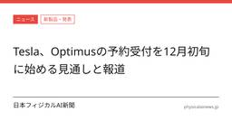
Tesla、Optimusの予約受付を12月初旬に始める見通しと報道
日本フィジカルAI新聞
Teslaが人型ロボット「Optimus」の予約受付を12月初旬に始める見通しだと、The San Francisco Standardが報じた。ロボティクス投資家Modar Alaoui氏は、受付開始が「The Humanoids Summit」の開催時期か、その数日後になると説明した。Teslaによる公式発表は確認されておらず、予約開始や価格、出荷時期は確定していない。
16時間前
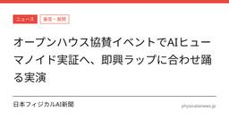
オープンハウス協賛イベントでAIヒューマノイド実証へ、即興ラップに合わせ踊る実演
日本フィジカルAI新聞
産経新聞は2026年10月29日、「オープンハウス協賛イベントでAIヒューマノイド実証へ、即興ラップに合わせ踊る実演」と報じた。
16時間前
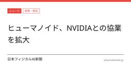
Humanoid、NVIDIAとの協業を拡大
日本フィジカルAI新聞
Robotics & Automation Newsは、HumanoidがNVIDIAとの協業を拡大し、次世代ヒューマノイド向けの計算基盤を構築すると報じた。
16時間前
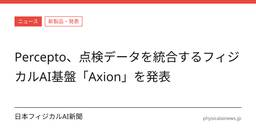
Percepto、点検データを統合するフィジカルAI基盤「Axion」を発表
日本フィジカルAI新聞
Perceptoは2026年10月27日、点検データを分析するフィジカルAI基盤「Axion」を発表した。160超のAIモデルを搭載し、10万時間超の自律点検データで訓練したとしている。既存のドローンやセンサーのデータを取り込むソフトウェア提供を始めた。
16時間前
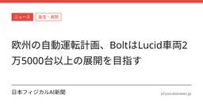
欧州の自動運転計画、BoltはLucid車両2万5000台以上の展開を目指す
日本フィジカルAI新聞
欧州のロボタクシーや自動運転車両の計画を、各社がNVIDIAのGTC Berlinで紹介した。BoltはLucidと組み、欧州の複数都市で自動運転車両2万5000台以上の展開を目指す。計画には2027年のマドリードでの実走行データ収集が含まれるが、規制当局の承認が条件だ。
16時間前
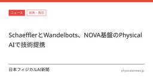
SchaefflerとWandelbots、NOVA基盤のPhysical AIで技術提携
日本フィジカルAI新聞
SchaefflerとWandelbotsは、Wandelbots NOVAを基盤に製造向けPhysical AIプラットフォームを開発する。産業用・ヒューマノイドロボットを対象に、シミュレーションから工場展開までを共通のソフトウェア環境でつなぐ。自動化コストをライフサイクル全体で最大40％削減する目標を掲げる。
16時間前